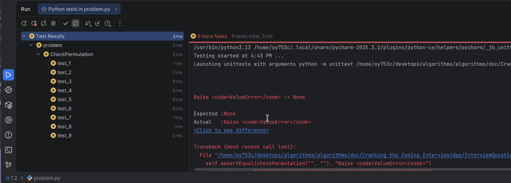
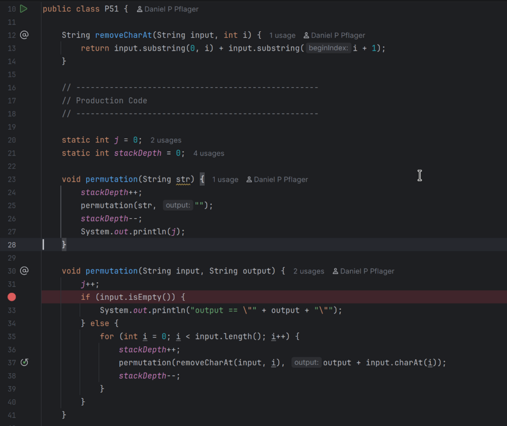
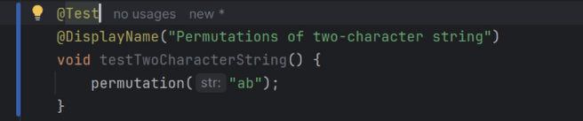

We continue working on Interview Question 1.3 on p90.
2025-02-18 07:57 (UTC-8) by Daniel
Daniel did not get all test cases passing as he had defined them, but neither did Gayle. In fact, Daniel's solution to test11 did not corrupt the output string, where Gayle's put a null character in the first position.
There was enough ambiguity in the problem statement to make the actual results of some cases ambiguous, and therefore subject to an educated guess.
We looked at Gayles solution on p194, and concluded our solutions were no worse at the cases which were unambiguous.
As David observes, the best requirements statement would consist of a complete set of tests.
IX - Interview Questions
1 - Arrays and Strings
1.3 Urlify
We continue working on Interview Question 1.3 on p90.
2025-02-16 10:00 (UTC-8) by Daniel
We spent some time syncing our environments, and after getting that squared away we looked at our progress on 1.3.
We found that we might not have understood the problem.
We updated our test cases and got a deeper understanding of the problem space.
The result was that we needed to re-think our implementations.
We agreed to have another go at getting our tests and implementations all passing by next time.
IX - Interview Questions
1 - Arrays and Strings
1.3 Urlify
We continue working on Interview Question 1.3 on p90.
2025-02-04 8:00 (UTC-8) by Daniel
We populated our 1.3/problem.json files and after considerable effort discovered that David's djf branch had some artifacts which needed to be updated. The errors they presented misled us into thingking the problem was in Cracking the Coding Interview/ somewhere.
It was not. The problem(s) was were algorithms/practice/python/generate-problem-html-from-problem-json/RUNME and in algorithms/practice/python/generate-problem-py-from-problem-json/RUNME and were due to quoting issues.
Having got that sorted out, we now agree to get all our respective tests (in our respective directory hierarchies) for 1.3 by next time.
IX - Interview Questions
1 - Arrays and Strings
1.2 Check Permutation
We continue working on Interview Question 1.2 on p90.
2025-02-04 8:00 (UTC-8) by Daniel
We wrote/updated test cases for bad input data resulting in ValueErrors.
Now we need to think about the problem statement's lexicon/ontology. Let's start by finding the nouns:
"Given two strings, write a method to decide if one is a permutation of the other."
Having found the nouns string and permutations, we should define them.
A string may be defined as a sequence of characters.
In Python a string is an immutable sequence of Unicode characters.
A Unicode character is an integer in the range $0$ to $2^{32}-1$ inclusive.
Similarly to the situation in Interview Question 1.1, we have a choice of implementing a solution for all Unicode, or choose a definition based on a subset of Unicode, such as all ASCII characters or Extended ASCII characters.
We decide to solve the problem for all Unicode.
Having produced a workable solution using Python dictionaries, we decided to look at Gayle's solution on p193.
We noticed that in her first solution, she proposed what David had proposed which was to sort each string and compare the two sorted strings. The sorted string solution's time complexity would be O(2 len(string1) + log(len(string1)))
We both realize that the strings must be identical in length, so there is a potential optimization to our dictionary solution to pass though both strings simultaneously in one for loop, but is that really any better?
IX - Interview Questions
1 - Arrays and Strings
1.2 Check Permutation
We continue working on Interview Questions 1.1 on p90.
We noticed the same Unicode vs ASCII vs Extended ASCII aspect as in 1.1
David asked "Is an empty string a permutation of an empty string?"
Reminded Daniel of Wittgenstein's attempts to categorize statements. David's questions might fall into the category of having "violated" grammatische Regeln (grammatical rules), if permutation requires something to permute in order to be meaningful
We agreed that David's question and the question "Is a single character a permutation of another identical character?" are more like semantic rule violations.
What does one do with test cases that implement such statements? Gayle kind of suggests we should accommodate silly inputs.
David proposes such questions may be best represented in Python by ValueErrors.
To implement this perhaps we can use a Python function which takes two string arguments.
The function could return True or False OR it could raise a ValueError.
From the directory algorithms/doc/Cracking the Coding Interview/dpp/InterviewQuestions/Chapter1-ArraysAndStrings, we manually copied ../../../../../practice/python/dsa/Template/ to create .../algorithms/doc/Cracking the Coding Interview/dpp/InterviewQuestions/Chapter1-ArraysAndStrings/1.2
cd algorithms/doc/Cracking the Coding Interview/dpp/InterviewQuestions/Chapter1-ArraysAndStrings
cp -r ../../../../../practice/python/dsa/Template .
mv Template 1.2
Then we manually edited problem.json to match the problem statement.
This included reordering problem.json to put the test before the examples, reasoning that we'd choose a couple of the tests to serve as examples.
It involved populating the "hints": [] array with content found in the book's Hints section starting on page 653.
Here's the current progress:
Loading...
Loading file...
We then ran algorithms/practice/python/generate-problem-html-from-problem-json to generate problem.html from problem.json
cd algorithms/doc/Cracking the Coding Interview/dpp/InterviewQuestions/Chapter1-ArraysAndStrings/1.2
../../../../../../practice/python/generate-problem-html-from-problem-json/RUNME
which resulted in this being displayed in the terminal:
Rendered template saved to /home/oy753c/desktops/algorithms/algorithms/doc/Cracking the Coding Interview/dpp/InterviewQuestions/Chapter1-ArraysAndStrings/1.2/problem.html
And then ran algorithms/practice/python/generate-problem-py-from-problem-json to generate python.py from problem.json
dell7750:~/desktops/algorithms/algorithms/doc/Cracking the Coding Interview/dpp/InterviewQuestions/Chapter1-ArraysAndStrings/1.2> ../../../../../../practice/python/generate-problem-py-from-problem-json/RUNME ./problem.json
generate-problem-py-from-problem-json.py <directory containing problem.json>
Daniel then used the unit-test launcher for PyCharm to run the stubbed code. As expected all 9 stub tests failed:

Next time, we should write the code for a solution (or maybe a couple solutions).
Following Gayle's advice, we first discussed the problem statement. We recognized that Python characters are Unicode, so if we're using Python as the coding language we've got $2^{32}$ characters to worry about.
We realized solving the problem for all Unicode might not be practical in an interview context, but if we had to solve it, we'd consider using a set to track the unicode characters by their ord(c) value.
We also realized that if we were dealing with ASCII characters, our solution space would be more manageable and we might propose solving this problem instead.
Extended ASCII came into the discussion as well, which was also manageable.
Around this time we decided to look at the solution on page 192
We were pleased to have identified the same general concerns that Gayle had, and decided to base our implementation on ASCII characters.
We did NOT realize that one of our solutions could be based upon the length of the string. Since ASCII has exactly 128 characters, any string longer than 128 MUST have duplicates in it.
Daniel implemented his solution (in the algorithms/doc/Cracking the Coding Interview/dpp/InterviewQuestions/Chapter1-ArraysAndStrings/1.1/python.py file, but didn't know how to modify the test case to test for expected ValueError exceptions.
Having looked that up, Daniel decided to use a with expression.
We manually copied algorithms/practice/python/dsa/Template/ to algorithms/doc/Cracking the Coding Interview/dpp/InterviewQuestions/Chapter1-ArraysAndStrings/1.1
Then we manually edited problem.json to match the problem statement.
We then ran algorithms/practice/python/generate-problem-html-from-problem-json to generate problem.html from problem.json
And then ran algorithms/practice/python/generate-problem-py-from-problem-json to generate python.py from problem.json
Daniel then created a unit-test launcher for PyCharm to run the stubbed code.
Some form of semantic net showing "basic data structures" and the algorithms associated with them.
Practice implementing the data structures and algorithms (on paper and then on a computer).
If you don't feel very, very comfortable with each of the data structures and algorithms listed, practice implementing them from scratch.
What is the definitive assembly language reference for Windows, Linux, MacOS, Android, Raspberry PI, arduino and stp32.
Have a mental list of "optimizations"
Is there a diagramming method or animating method which could be used before coding to "walk through your approach in detail"
What is a "detail"?
What is beautiful code? You'll know it when you see it? The Pragmatic Programmer may have a helpful checklist.
There is a lexicon associated with each program.
Create a cheat sheet of optimization strategies
Define the test cases first
Design tests as if I will have to prove by mathematical induction later
We finished VI - Big O
We struggled through the remaining examples, then worked through the Additional Problems.
2025-12-31 10:19 (UTC-8) by Daniel
VI.6 gave us some pause, because it ended up being O(sqrt(n)), where we thought it would be O(log(n)).
It seemed a bit surprising that the code was O(sqrt(n)) instead of O(log(n)), only because it seemed to be so much shorter and tidier.
I think it was the guess * guess common code that seduced my (dpp) mind.
We succeeded in coming up with a couple of formulas for the sequence.
2025-12-11 08:57 (UTC-8) by Daniel
We then looked at Gayle's Big-O analysis and attempted to get insight into it based on our exact formula.
We concluded that her notion of an upperbound of O( n2 * n! ) was possibly overly pessimistic.
We were interested in how the code could be rewritten to be more efficient - as an exercise apart from the pedagogical implementation Gayle provides.
We spent some time trying to come up with our own formula for the sequence.
Even running the code in a debugger, following the code step-by-step, it was really hard to figure things out.
2025-12-15 12:20 (UTC-8) by Daniel
Formally, we define $f(n)$ as the number of calls to permutation() for an input string of length n.
Before we could come up with a formula, we needed to understand the pattern in the sequence, so we came up with this instrumented test code:

A single test for which looks like the following:

We then ran such a test and tabulated the results thus:
Number of calls to permutation()
Stack Depth
Call with arguments
1
1
permutation("ab", "")
2
2
permutation("b", "a")
3
3
permutation("", "ab")
4
2
permutation("a", "b")
5
3
permutation("", "ba")
5
2
permutation("a", "b")
5
1
permutation("ab", "")
In this way, we were able to predict how many calls to permutation() there would be. The answer was 5 in this case.
This also gave us the insight that whenever we encountered a call like permutation("b", "a") we could be certain it would be followed by another like permutation("", "ab")
Since there would also be a print statement associated with each call like permutation("", "ba"), we had the intuition that there would be 2! such calls, one for each permutation of the string "ab".
So we know factorials are going to be involved in $f(n)$.
Using the test program, we built up some notions of how to define specific instances of $f(n)$ as follows:
n
f(n)
Commentary
0
$ f(0) = 1 $
There's always at least one call to permutation(), even if the contents are empty. That is the call which prints the empty permutation.
1
$ f(1) = f(0) + 1 = 2 $
Since f(0) always happens, it is the first term. The second term is the recursive call to permutation() called within the for loop.
2
$ f(2) = f(0) + 2f(1) = 5 $
f(0) is as above the first term. In this case the second term consists of two $f(1)$ terms resulting from two calls to permutation() (i.e. two loops through the for loop). Each call to permutation() results in a recursive call to permutation() within the for loop, leading to a total of 4 recursive calls.
3
$ f(3) = f(0) + 3f(2) = 16 $
f(0) is as above the first term. In this case the second term consists of three $f(2)$ terms resulting from three calls to permutation() (i.e. three loops through the for loop). Each call to permutation() results in a recursive call to permutation() within the for loop, leading to a total of 15 recursive calls.
4
$ f(4) = f(0) + 4f(3) = 65 $
The pattern continues as before, So we now have a way to define f(n) as a recurrence relation. We confirmed the sums by running the software.
5
$ f(5) = f(0) + 5f(4) = 326 $
6
$ f(6) = f(0) + 6f(5) = 1957 $
7
$ f(7) = f(0) + 7f(6) = 13700 $
8
$ f(8) = f(0) + 8f(7) = 109601 $
n
$ f(n) = f(0) + nf(n - 1)$
So this is our generalized recurrence relation.
This puts us in a good position to come up with a non-recurrence relational equivalent.
Or more generally, which may be interpreted as all possible ordered selections of any length from a set of n elements, including the empty selection (i=0) and the full permutation (i=n).
ChatGPT 5.2 has something to say about this series also here
Particularly it mentions that "This quantity arises in:
Counting states in backtracking / permutation search
Analysis of permutation-prefix trees
Enumeration problems where order matters but length is variable"
Example 12s explanation finally became a little clear to us after running Daniel's dpp/p51/ code implemented in Linux using IntelliJ IDEA with a no-jar unit test framework.
Daniel felt quite disturbed that he made so many logic mistakes when reading through the code even though he was using the debugger.
We decided that the choice of variable names was creating cognitive dissonance for us so we renamed some to see if that might help aid understanding.
string and prefix became input and output. rem, which we though might be short for "remainder", became residue.
We also decided to extract a function removeCharAt(String, int) to make the code more understandable.
Daniel still didn't feel as if he had a visual for what was going on, although the notion of removing a character had become clear.
After a bit of throught, we also realized that the System.out.println(prefix); line would be called exactly N! times.
We put in a counter j to see how many times the overloaded permutation(String input, String output) was called. This produced an interesting sequence based on the number of characters in the input string: (0, 1, 5, 20, 84, 409, 2365, 16064, ...)
We decided to see if ChatGPT 5 could come up with a formula for the sequence. It didn't do a great job.
It was a bit better than Daniel expected, and not as good as David had hoped. It came up with a very specific (and wrong) answer.
Example 4 gave Daniel some new data, because he was unused to thinking of the time complexity of a nested loop in two independent variables as O(AB).
After doing some quick research on Chat GPT, we concluded that using O(AB) was at a minimum "more correct", and that we were unfamiliar with it probably because in GeeksForGeeks and Sedgewick and other sources we have been learning from such algorithms were often just considered O($N^2$).
Example 8 really fobbed us up because it involved two variables, which we didn't recognize. One variable for the length of the strings in the array, and another length for the number of elements in the array itself. We correctly reasoned that sorting each string was likely O(s log s) complexity (s stands for string length), but we did not
account for the fact that there were a strings to sort (a stands for array length) for a total of O(a(s log s)), nor did we realize that sorting the array itself also involved both comparing strings O(s) and sorting array elements O(a log a) (one comparison per sort operation) for a total of O(s(a log a)).
Thus the grand total would have been O(a(s log s)) + O(s(a log a)) = O(a(s log s) + s(a log a)) = O(as(log s + log a))
Example 10 had an interesting nuance. In the case of this prime number algorithm, we ended up with O($\sqrt N$) complexity, because the algorithm was only checking up to the square root of N for factors. In such a case, $\sqrt N$ is the dominant term, so we use it as the argument in O($\sqrt N$).
This brings us to Example 12. It involves permutations of a string, but neither of us can visualize what's really happening with it, so we decided we should code it up by next time and be ready to run it with some test cases to see if we can get a better sense of what it's doing during our next session.
Daniel created a directory /dpp to contain a java file P51 containing the code, a minimal test framework, and a few tests. All can be run in IntelliJ IDEA.
Working through this we came upon a discussion of "amortized time". The example given was of a dynamic array. The array is initialized with a fixed size, but when it is full, a new array is created with double the size and the elements are copied over. This operation is expensive, but it only happens occasionally. The amortized time complexity of the array operations is O(1), because the cost of the occasional resize operation is spread out over all the operations.
But this wasn't really explained well. We decided to skip ahead to Log N Runtimes.
We decided to continue there next time by working through each example by NOT looking at the answer first, but just scrolling to see enough code to attempt the answer.
This utility is written in JavaScript(Node). It is a utility to generate HTML from a problem JSON file. It has some issues which we will address in the future. See
github.com issues.
In its current form, you must change the current directory to one containing a problem.json file. The generated HTML will be written to problem.html.
It is interesting that Gayle should say "Receiving an offer is not about solving questions flawlessly (very
few candidates do!). Rather, it is about answering questions better than other candidates."
In particular, what does "answering questions better than other candidates" look like?
Daniel also mused on the statement "It's about developing a fresh algorithm, not memorizing existing problems": What is a fresh algorithm?
Is it an algorithm that is completely novel? That seems unlikely, because the interviewer is asking a question whose answer is known to him/her.
Or perhaps the interviewer hopes to be surprised by some novel way of thinking or coding the solution? Again, that seems unlikely since a seasoned interviewer will have asked the same question of many candidates, and will have seen many solutions to the same problem and few solutions will appear novel.
Or perhaps the interviewer is looking for candidates who did something which the interviewer has seen before, but considered novel when he/she first saw the solution? This seems quite arbitrary, superficial and idiosyncratic - not respectful of the need for consistency across interviewers and candidates.
Furthermore, it seems unlikely that "memorizing existing problems" is mutually exclusive with "developing a fresh algorithm". Doesn't one have to memorize existing techniques from a myriad of problems to be able to develop a fresh algorithm? Without some knowledge of existing techniques, the candidate would be unable to distinguish "fresh" from "how everybody solves it".
We are interested in reviewing 2s complement concepts.